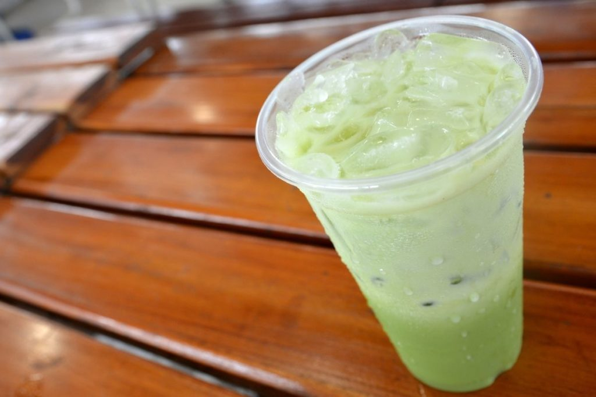

Jasmine Green Milk Tea

Description
This Jasmine Milk Tea recipe is made using Jasmine green tea, a tea which is bold in flavor and perfectly pairs with the creaminess of the milk.
The result is a sweet, smooth, and delicate drink with floral perfumed notes.
Ingredients
- 2 jasmine green tea bags
- 1 cup of water
- 1 tablespoon of honey
- 1/2 cup of milk
- ice, to serve
Steps
- Boil the water in the kettle and place the jasmine green tea bags into a jug.
- Once boiling, pour the water into the jug and steep the tea for 2 minutes.
- Then remove the tea bags and discard. While the tea is hot, stir in the honey to dissolve.
- Set the jasmine green tea aside to cook for 5 minutes.
- Then into a tall glass add ice and milk, pour over the jasmine green tea and enjoy the chilled drink.